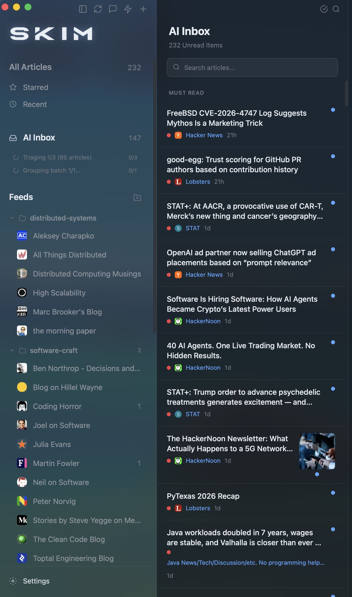
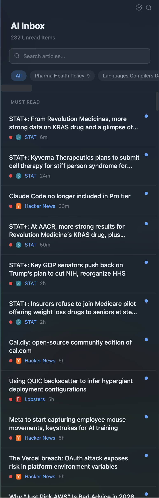
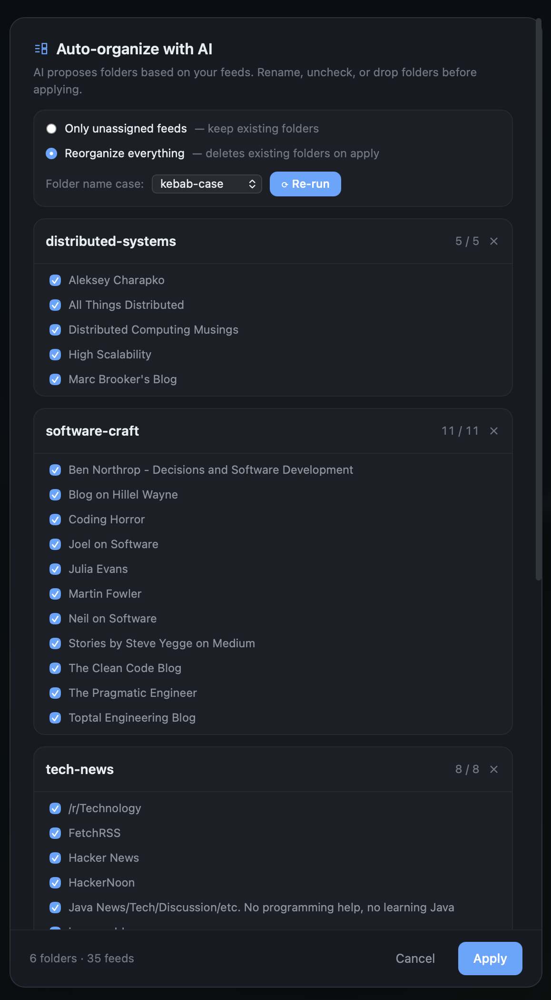
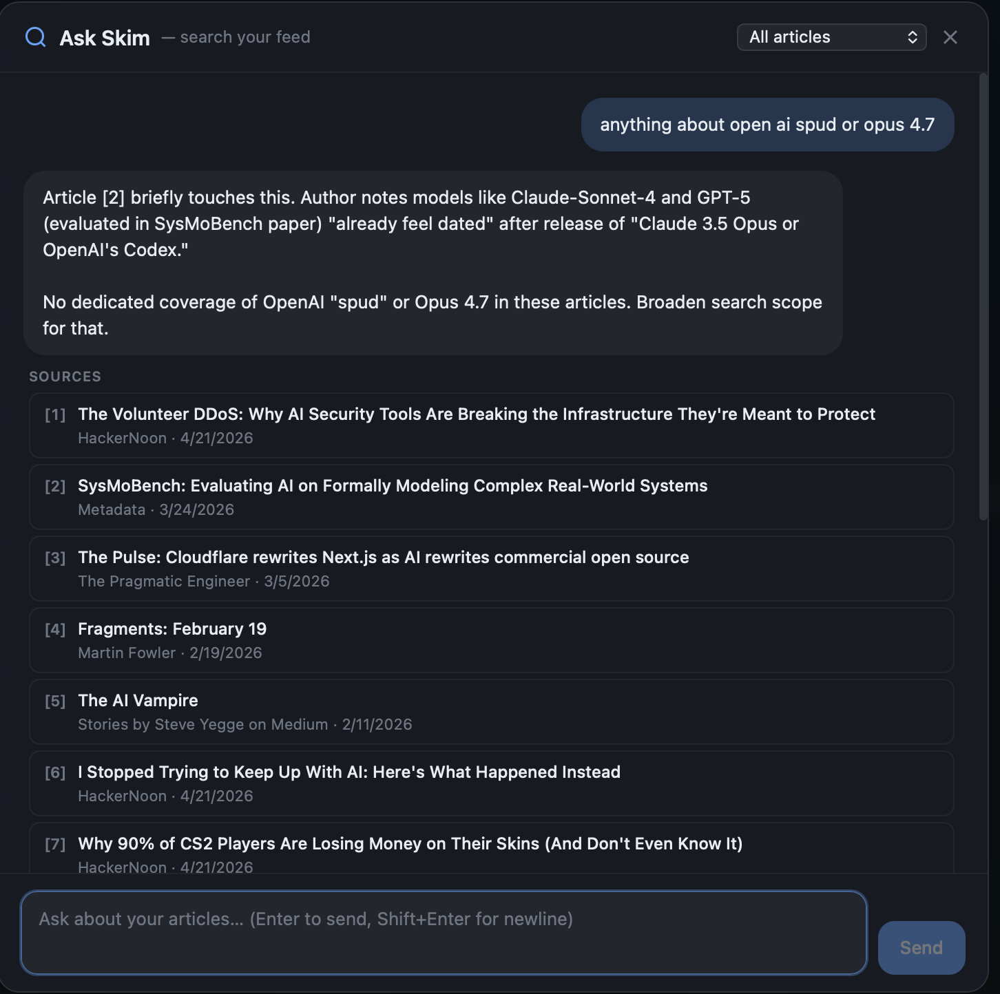
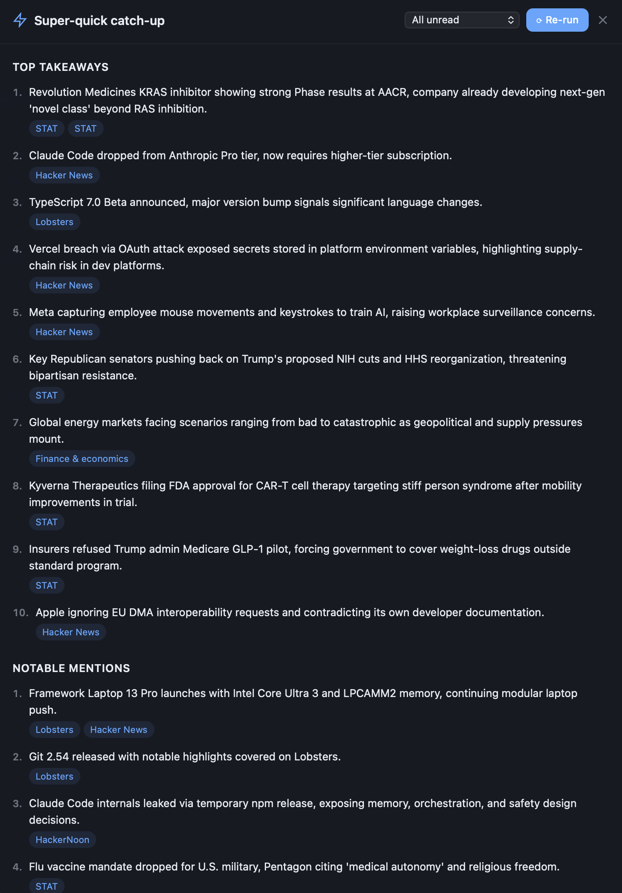
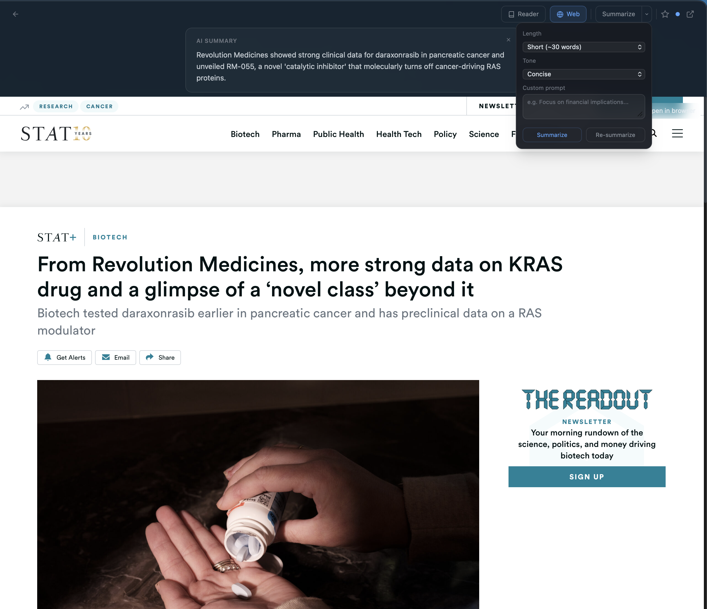

Ingest feeds. Let a model triage the noise.
Skim the rest.


Every unread scored 1–5. Must-read floats. Theme chips slice the queue by topic.

AI proposes folders from your feeds. Rename, uncheck, apply.

Chat across your whole feed with citations. Pulls in web results when needed.

Ten takeaways plus notable mentions across everything unread.

Length, tone, format, custom prompt. Reader or web view.
Sidebar, list, detail. Favicons, unread counts, keyboard nav.
Reading time, stars, chats, feedback, overrides — all feed triage. Plus a freeform "what I care about" prompt.
Regex on title / URL / OPML category. Any/all match modes.
Two-way Feedly sync. Import / export OPML.
Chat grounded on article body. Web-search tool available.
All data in SQLite. No Skim cloud. No telemetry.
llama.cpp on desktop. MLX + Apple Foundation Models on iOS.
OAuth sign-in — no API key. Uses your Pro/Max.
j/k, r, s, /, ⌘N. Swipe actions. Drag-drop OPML.